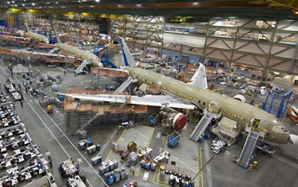
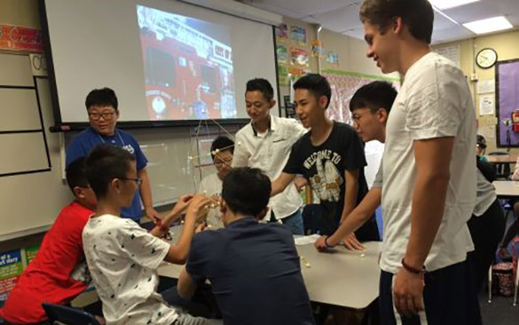
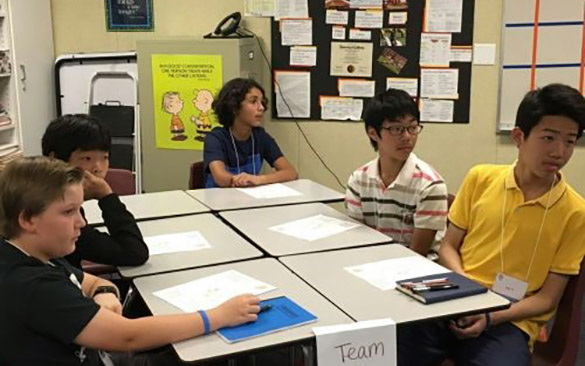
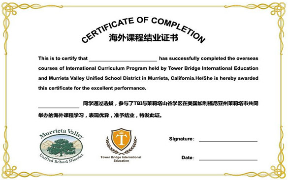
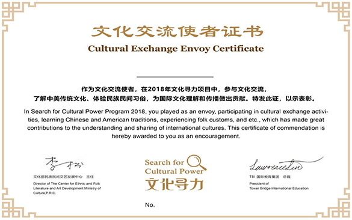
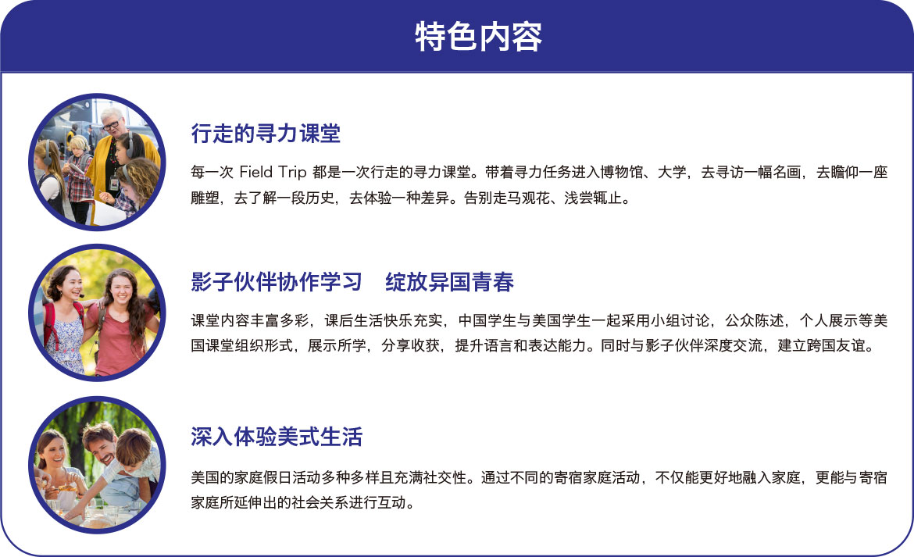
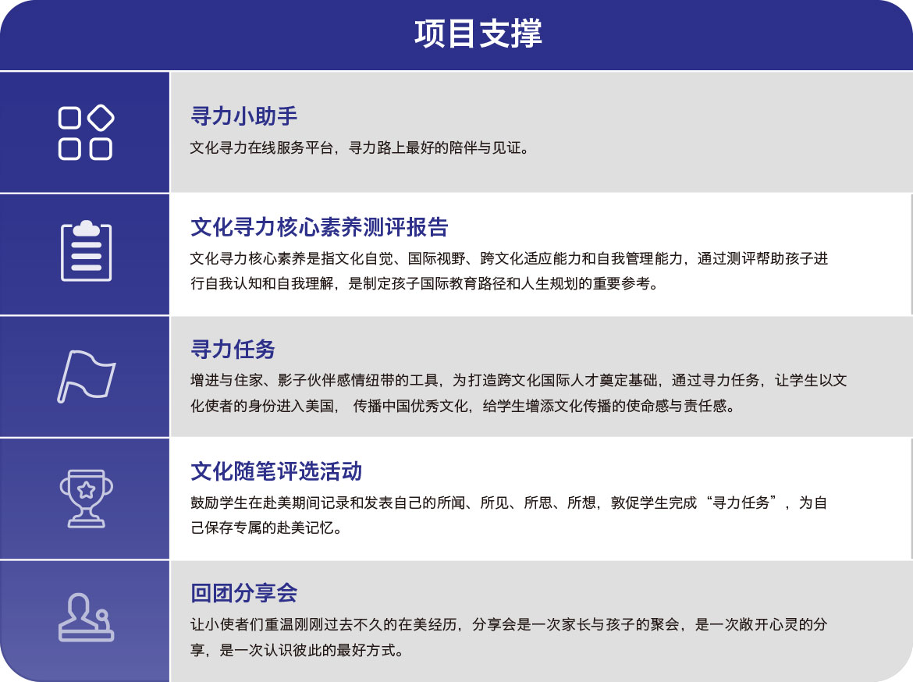
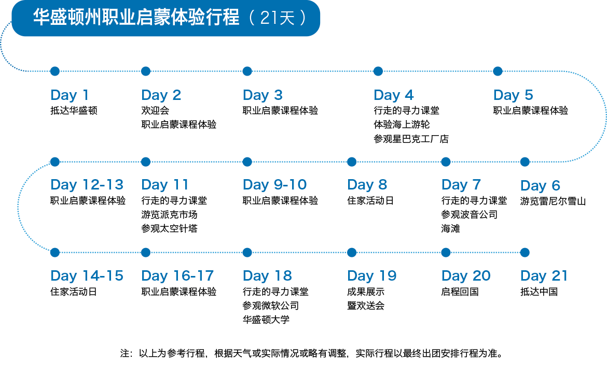

-
职业启蒙体验项目

人生的设计在童年。美国的职业启蒙教育非常发达，从6岁上学开始，就通过一系列的课程，来帮助孩子建立兴趣，找到职业方向，启动人生的发动机。华盛顿职业启蒙课程体验项目，依托西雅图在航天、计算机软件、生物信息科学等方面的资源，让孩子近距离了解科技对人类的影响和变化，走进波音、微软等公司，了解最新的科技研究、自由探索高科技的力量。职业启蒙课程的内容主题包括：如何发现自己的兴趣？如何规划你的未来？如何准备面试？如何做演讲？如何找工作？通过这些课程让孩子逐渐认识自己，发现自己的潜能和兴趣，从而做出自己的职业规划。
时间：2018.07.08 ~ 2018.07.28 / 07.31 ~ 08.20
-
项目简介
-
• 依托地区独特优势和资源，走进波音和微软公司等，近距离感受世界知名企业。

-
• 通过精心设计的课程，让学生建立兴趣，找到职业方向，启动人生的发动机。

-
• 通过研习和实地参观，让学生挖掘潜能，发现初心，做出自己的学习和职业规划。
-
• 结业后收获“文化交流小使者”证书，提升个人多元化背景。

-
• 依托地区独特优势和资源，走进波音和微软公司等，近距离感受世界知名企业。
-
项目特色和厚力支撑
  -
魅力西雅图
西雅图是美国西北部最大的城市，毗邻太平洋。北部开车 2 小时就是加拿大第二大城市温哥华。西雅图有着优越的地理位置，气候温和，适合居住。西雅图城市三面环山，临山傍水，四季常青。大西雅图地区所在的华盛顿州教育水平远远高于美国平均水平。西雅图有着大量优质的公立和私立高中，根据 2015年 US NEWS 高中排名结果，华盛顿州一共有 8 所学校拿到金奖，56 所学校拿到银奖，同时也有着像华盛顿大学这样的著名学府。
想和更多有趣的朋友同行， 现在就加入我们的旅途吧！